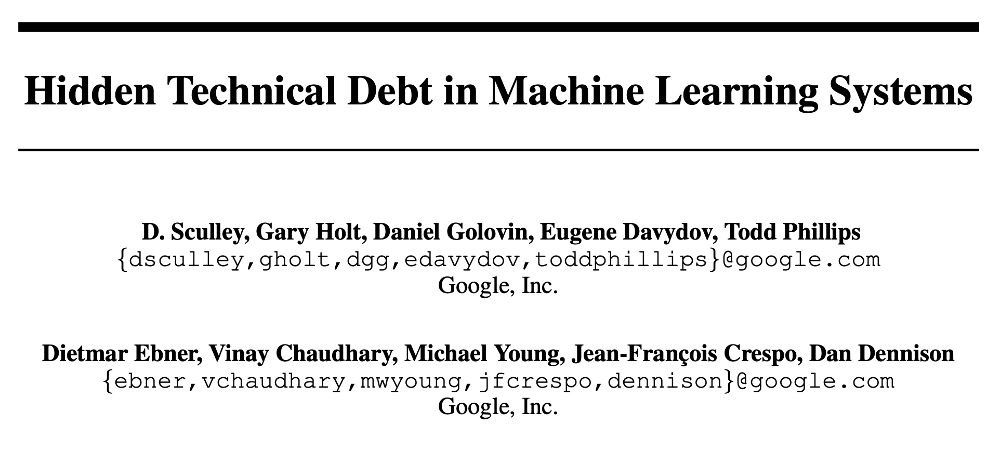
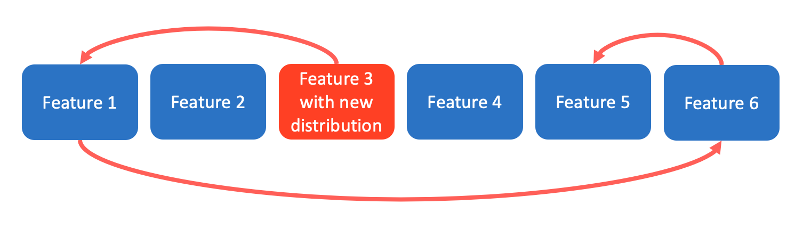
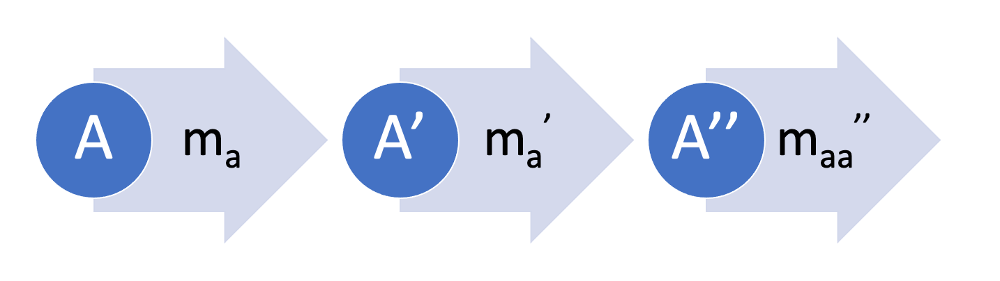
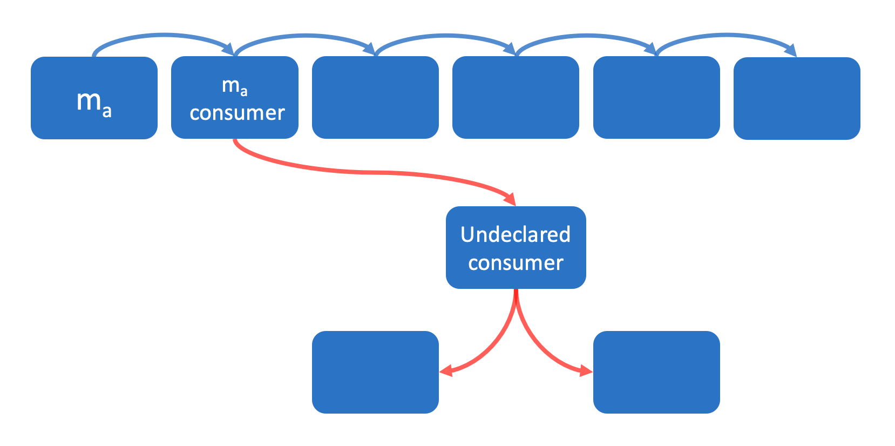
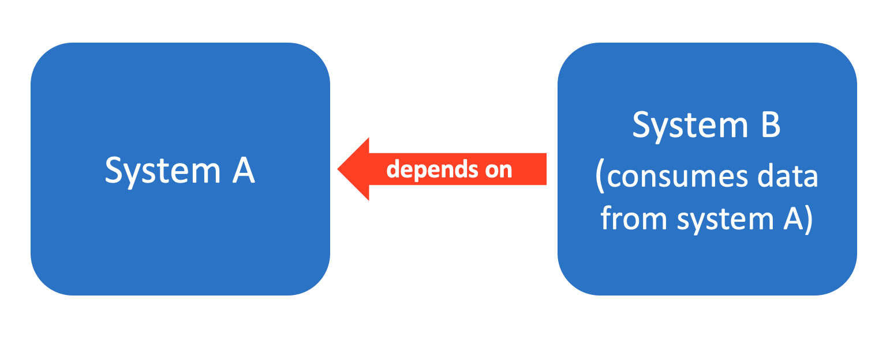
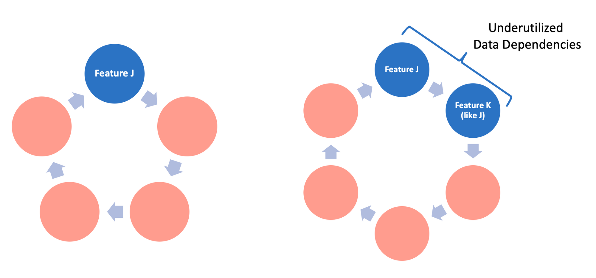
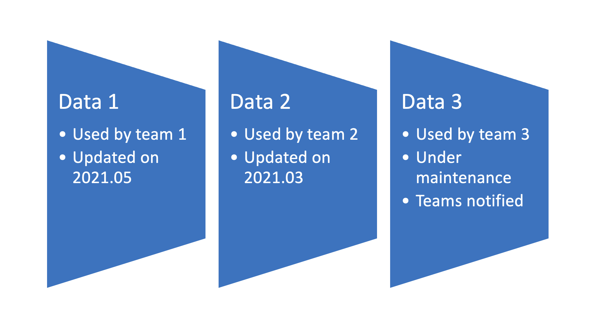
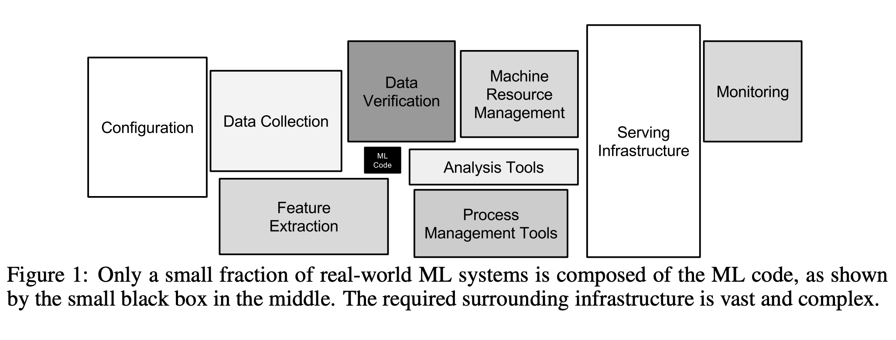
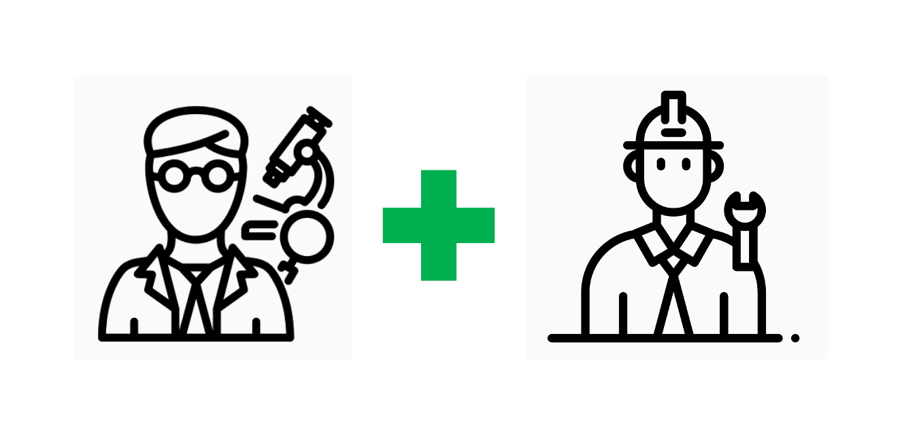
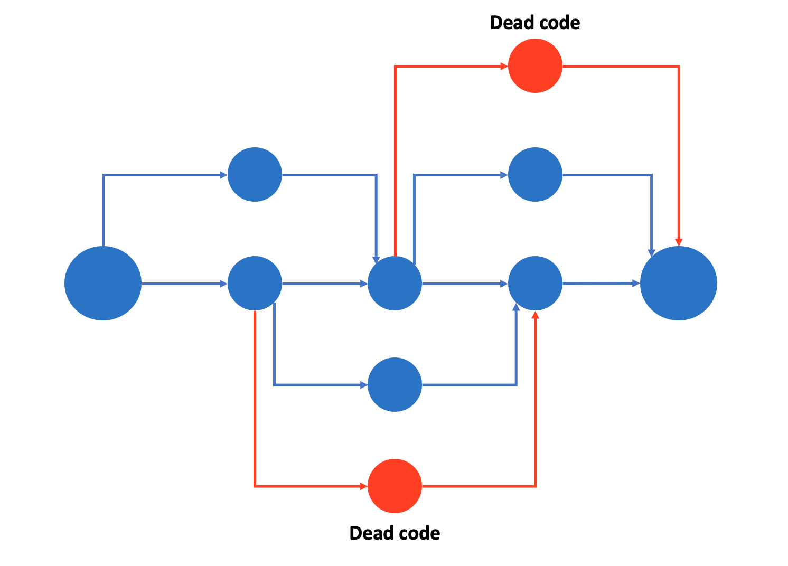

Deep dive into MLOps.
Motivation
Machine Learning (ML) Proof Of Concept (POC) is one of the key phases in ML projects. Iteratively coming up with a better modeling approach, improving data quality, and finally, delivering a minimum viable solution for a grand problem is fascinating and you learn a lot.
At the end of the POC phase, if the results are satisfactory and stakeholders agree to move forward, the ML engineer gets tasked with finding and implementing an appropriate method for deploying the model into production. Depending on the business use case and the scale of the project (and many other factors), he/she will usually select to proceed with one of the following (non-exhaustive):
- Type 1: Save the trained model artifacts in the backend. Implement an inference logic that uses the trained model. The frontend engineer then requests the predictions from the backend via HTTP.
- Type 2: Choose to use one of the cloud services (Amazon AWS, Google GCP, Microsoft Azure) for training the model. Transfer the training data to the cloud, train the model and deploy it in the cloud. Set up a cloud endpoint and return predictions via HTTP requests.
- Type 3 (worst): Implement the training and the inference logic in the backend. At the same time, implement the data extraction, transformation and the loading (ETL) processes in the backend so that the system is able to retrain the model when needed. Try his/her best to setup monitoring, so that one day when things go wrong, he/she can find and fix the problem.
- Type 4: Use the cloud services to setup everything (ETL, data preprocessing, model training, monitoring, configuration, etc.). The frontend engineer then requests predictions via HTTP endpoint provided by the cloud service.
- Type 5: Use open-source packages, connect and build everything manually.
There can be many other options too. However the key message here is that ML deployment can take on many forms.
With ever increasing data and the expertise of the people dealing with the data, various ML models are being trained, tested, and deployed into production with unprecedented rates. However, with the increasing number of model deployments, ML practitioners have been experiencing a set of problems related to the unique property of ML-embedded systems - the usage of data. And this is exactly where MLOps comes to the rescue. Similar to the concept/culture of DevOps in the traditional software engineering discipline, the term MLOps refers to the engineering culture and best practices related to deploying and maintaining real-world ML systems.
There are many resources related to MLOps. Some of my favorites are:
- “Hidden Technical Debt in Machine Learning Systems” - Google (Analyzed in this blog post.)
- “Machine Learning Guides” - Google
- “MLOps for non-DevOps folks, a.k.a. “I have a model, now what?!” - Hannes Hapke
- “From Model-centric to Data-centric AI” - Andrew Ng
- “Bridging AI’s Proof-of-Concept to Production Gap” - Andrew Ng
- “MLOps: Continuous delivery and automation pipelines in machine learning” - Google
- “What is ML Ops? Best Practices for DevOps for ML” - Kaz Sato
- …and so on.
Perhaps the most popular resource on the above list is the paper called “Hidden Technical Debt in Machine Learning Systems” by Google.
When I first read the paper, I found it to be highly useful in practice and understood that I need to go over this paper whenever I am building ML solutions. So to make my life a bit easier, I have decided to summarize the paper and do it so using simple terms and explanations.

Key points:
- Developing and deploying ML systems might seem fast and cheap, but maintaining it for the long term is difficult and expensive.
- Goal of dealing with technical debt is not to add new functionality, but to enable future improvements, reduce errors, and improve maintainability.
- Data influences ML system behavior. Technical debt in ML systems may be difficult to detect because it exists at the system level rather than the code level.
Complex Models Erode Boundaries
1. Entanglement
- CACE principle:
CACE stands for Changing Anything Changes Everything. It refers to the entangled property of ML-systems, where changing the input distributions of a single feature can lead to changes in the rest of the features. CACE applies to input signals, hyper-parameters, learning settings, sampling methods, convergence thresholds, data selection, and essentially every other possible tweak. - Possible solution #1:
If the problem can be decomposed into sub-problems (disjointed, uncorrelated), train models for each sub-problem and serve ensemble models. In many cases ensembles work well because the errors in the component models are uncorrelated. However, ensemble models lead to strong entanglement: improving an individual model may actually make the system accuracy worse if the remaining errors are more strongly correlated with the other components. - Possible solution #2:
Monitor and detect changes in the prediction behavior in real-time. Use visualization tools to analyze the changes.

2. Correction Cascades (chain reaction)
- When we have a ready-to-use model ma for problem A and need to train a new model for a problem A‘, it makes sense to train a correction model m’a that takes as input the predictions of the model ma.
- This dependency can be cascaded further, for example training a model m’’aa based on the model m’a.
- This dependency structury creates an improvement deadlock. When we try to improve the accuracy of a single model, other models are affected by the change causing system-level issues.
- Possible solution #1:
Train and tune the model ma directly for the problem A’ by adding appropriate features specific to the problem A’. - Possible solution #2:
Create a new model for the problem A’.

3. Undeclared Consumers (Please let us know if you are using!)
- Often, predictions of a model are used in other services.
- If we don’t identify all end users of a model, later in the process, if we make changes to the model, the secret consumers will be affected silently and will face strange issues. Without clear definition of consumers, it becomes difficult and costly to make changes to the model at all.
- In practice, engineers will choose to use the most accessible signal at hand (e.g. model predictions), especially when deadlines are approaching.
- Possible solution:
Setup access restrictions and determine all consumers. Similarly, setting up service-level agreements (SLAs) would also work.

Data Dependencies Cost More than Code Dependencies
1. Unstable Data Dependencies (Can I rely on you?)
- ML-systems often consume data (input signals) produced by other systems.
- Some data might be unstable (qualitatively or quantitatively changing over time).
For example:
- Input data to system B is produced by a machine learning model from system A, and system A decides to update its model.
- Input data comes from a data-dependent lookup table (e.g. calculates TF/IDF scores or semantic mappings).
- Engineering ownership of the input signal is separate from the engineering ownership of the model that consumes it. Engineers who own the input signal can make changes to the data at any time. This makes it costly for the engineers who consume the data to analyze how the change affects their system.
- Corrections in the input data can lead to detrimental consequences too! Similar to the CACE principle.
For example:
A model that is previously trained on mis-calibrated input signals can start to behave strangely when the input data is recalibrated. This means that although the update was meant to fix a problem, it actually introduced complications to the system.
- Input data to system B is produced by a machine learning model from system A, and system A decides to update its model.
- Possible solution:
Create versioned copy of the input data. Using stable version of the data until the new data is checked and tested will ensure that the system is stable. ***Keep in mind that saving versioned copies of the data means we have to deal with potential data staleness and the cost of maintenance.

2. Underutilized Data Dependencies (How will this feature affect me in the future?)
- Underutilized data dependency - data that has very small incremental benefit for the model (0.0001% improvement).
- Example:
A system introduces new product numbering logic to the system. Since instantly removing the old product numbering logic will lead to disasters (since other components depend on it), engineers decide to keep the new and the old numbering logics for the time being. This way, new products use the new product numbering logic only, but old products have both the new and the old product numbers. Accordingly, the model is retrained using both features continuing to rely on old product numbers for some products. A year later, when the old numbering logic code is deleted, it will be difficult for the maintainers to find what went wrong. - Types of underutilized data dependency:
a) Legacy Features.
A feature F is included in a model early in its development. Over time, F is made redundant by new features but this goes undetected.
b) Bundled Features.
During an experiment, a group of features is evaluated and found to be useful. Because of deadline pressures, the group of features are added to the model together, possibly including features with low value.
c) ǫ-Features. As machine learning researchers, it is tempting to improve the model accuracy even when the accuracy gain is small and the complexity overhead is high.
d) Correlated Features. Often two features are strongly correlated, but one is more directly causal. Many ML methods have difficulty detecting this and credit the two features equally, or may even pick the non-causal one. When the correlations disappear in the future, the model will perform poorly. - Possible solution:
Leave-one-feature-out evaluations can be used to detect underutilized dependencies. Regularly performing this evaluation is recommended.

3. Static Analysis of Data Dependencies (Data Catalogs!)
- In traditional code, compilers and build systems perform static analysis of dependency graphs. Tools for static analysis of data dependencies are far less common, but are essential for error checking, tracking down consumers, and enforcing migration and updates.
- Annotating data sources and features with metadata (e.g. deprecation, platform-specific availability, and domain-specific applicability), and setting up automatic checks to make sure all annotations are updated helps to resolve the dependency tree (users and systems who use the data).
- This kind of tooling can make migration and deletion much safer in practice.
- Google’s solution can be found here (Section 8: “AUTOMATED FEATURE MANAGEMENT”).

Feedback Loops
When it comes to live ML systems that update their behavior over time , it is difficult to predict how they will behave when they are released into production. This is called analysis debt - the difficulty of measuring the behavior of a model before deployment.
1. Direct Feedback Loops (Learning wrong things)
- A model may directly influence the selection of its own future training data.
Example:
In an e-commerce website a model might recommend 10 different products to a new customer. The customer might choose a product category that he/she needs to purchase at the moment, but which is not related to his/her actual interests. The model captures this and retrains itself, learning the wrong interest and becoming confident that the chosen product category conveys the customer’s interest. - Possible Solution #1:
Acquiring customer feedback on the recommendations provided by the system. - Possible Solution #2:
Increasing “exploration” of the model so that it doesn’t “exploit” small number of signals (Bandit Algorithms). - Possible Solution #3:
Using some amount of randomization.
ML-System Anti-Patterns
In the real world, ML-related code takes a very small fraction of the entire system. Therefore, it is important to consider other parts of the system and make sure that there are as few system-design anti-patterns as possible.

1. Glue Code (Packages should be replaceable –> APIs)
- Glue code system design - system with large portion of code written to support the specific requirements of general-purpose packages.
- Glue code makes it difficult to test alternatives methods or make improvements in the future.
- If ML code takes 5% and glue code takes 95% of the total code, it makes sense to implement a native solution rather than using general-purpose packages.
- Possible Solution:
Wrap general-purpose packages into common APIs. This way we can reuse the APIs and not worry about changing packages (e.g. scikit-learn’s Estimator API with common fit(), predict() methods for all models).
2. Pipeline Jungles (Keep things organized)
- Usually occurs during data preparation.
- Adding a new data source to the data pipeline 1-by-1, gradually makes it difficult to make improvements and detect errors.
- Possible Solution #1:
Think about data collection and feature extraction as a whole. Redesign the jungle pipeline from scratch. It might require a lot of effort, but is an investment worth the price. - Possible Solution #2:
Make sure researchers and engineers are not overly separated. Packages written by the researchers may seem like black-box algorithms to the engineers who use them. If possible, integrate researchers and engineers into the same team (or create hybrid engineers).

3. Dead Experimental Codepaths (Clean your room!)
- Adding experimental code to the production system can cause issues in the long term.
- It becomes difficult/impossible to test all possible interactions between codepaths. The system becomes overly complex with many experimental branches.
- “A famous example of the dangers here was Knight Capital’s system losing $465 million in 45 minutes, because of unexpected behavior from obsolete experimental codepaths.” (source)
- Possible Solution:
“Periodically reexamine each experimental branch to see what can be ripped out. Often only a small subset of the possible branches is actually used; many others may have been tested once and abandoned.”

4. Abstraction Depth (Can we abstract this?)
- Relational database is a successful example of abstraction.
- In ML it is difficult to come up with robust abstraction (how to create abstractions for a data stream, a model and a prediction?).
- Example abstraction:
Parameter-server abstraction - framework for distributed ML problems. “Data and workloads are distributed over worker nodes, while the server nodes maintain globally shared parameters, represented as dense or sparse vectors and matrices.”
5. Common Smells (Something’s fishy…)
- “Code Smells are patterns of code that suggest there might be a problem, that there might be a better way of writing the code or that more design perhaps should go into it.” (source)
- Plain-Old-Data Type Smells.
Check what flows in and out of ML systems. The data (signal, features, information, etc.) flowing in and out of ML systems is usually of type integer or float. “In a robust system, a model parameter should know if it is a log-odds multiplier or a decision threshold, and a prediction should know various pieces of information about the model that produced it and how it should be consumed.” - Multiple-Language Smell.
Using multiple programming languages, no matter the great packages written in it, makes it difficult to efficiently test and, later, transfer the ownership to others. - Prototype Smell.
Constantly using prototype environments is an indication that the production system is “brittle, difficult to change, or could benefit from improved abstractions and interfaces”.
This leads to 2 potential problems:
- Usage of the prototype environment as the production environment due to time pressures.
- Prototype (small scale) solutions rarely reflect the reality of full-scale systems.
- Usage of the prototype environment as the production environment due to time pressures.
Configuration Debt
ML systems come with various configuration options:
1. Choice of input features
2. Algorithm-specific learning configurations (hyperparameters, number of nodes, layers, etc.)
3. Pre- & post-processing methods
4. Verification methods
In full-scale systems, configuration code far exceeds the number of lines of traditional code. Mistakes in configuration can lead to loss of time, waste of computing resources, and other production issues. Thus, verifying and testing configurations is crucial.
Example of difficult-to-handle configurations (Choice of input features):
1. Feature A was incorrectly logged from 9/13-9/17.
2. Feature B isn’t available before 10/7.
3. Feature C has to have 2 different acquisition methods due to changes in logging.
4. Feature D isn’t available in production. Substitute feature D’ must be used.
5. Feature Z requires extra training memory for the model to train efficiently.
6. Feature Q has high latency, so it makes Feature R also unusable.
Configurations must be:
1. Easy to change. It should seem as making a small change to the previous configuration.
2. Difficult to make manual errors, omissions, or oversights.
3. Easy to analyze and compare with the previous version.
4. Easy to check (basic facts and details).
5. Easy to detect unused or redundant settings.
6. Code reviewed and maintained in a repository.
Dealing with the Changes in the External World
ML systems often directly interact with the ever-changing real world. Due to volatility in the real world, ML systems require continuous maintenance.
1. Fixed Thresholds in Dynamic Systems
- For problems that predict whether a given sample is true or not it is required to set a decision threshold.
- The classic approach is to choose a decision threshold that maximizes a certain metric (precision, recall, etc.).
- When a model is retrained on a new data, the previous decision threshold usually becomes invalid.
- Manually calculating thresholds is time consuming, so automatic optimization method is required.
- Optimal approach is to extract a held-out validation set and use it to automatically calculate the optimal thresholds.
- Approach used by the Google Data Scientists can be found in the “Unofficial Google Data Science” blog post.
- My simple approach dealing with decision thresholds - blog post.
2. Monitoring and Testing
- Unit tests and end-to-end tests of systems are valuable. However, in the real-world, these tests are simply not enough.
- Realtime monitoring with automated response to issues is essential for long-term system reliability.
- What should be monitored:
a) Prediction Bias
Is the distribution of predicted and observed labels equal? Although this test is not enough to detect a model that simply outputs average values of label occurrences without regard to the input features, it is surprisingly effective.
For example:
- Real-world behavior changes and, now, the training data distributions are not reflective of reality. In this case, analyzing predictions for various dimensions (e.g. based on race, gender, age, etc.) can isolate biases. Further, we can setup automated alerting in case we detect prediction bias.
b) Action Limits
In real-world ML systems that take actions such as bidding on items, classifying messages as spam, it is useful to set action limits as a sanity check. “If the system hits a limit for a given action, automated alerts should fire and trigger manual intervention or investigation.”
For example:
- Setting maximum number of bids per hour
- Setting maximum ratio of spams to regular emails to be 3/5
c) Up-Stream Producers
When data comes from up-stream producers, the up-stream producers need to be monitored, tested, and routinely meet objectives that take into account the downstream ML system. Most importantly, any issues in the up-stream must be propagated to the downstream ML system. And the ML system must also notify its downstream consumers.
- Real-world behavior changes and, now, the training data distributions are not reflective of reality. In this case, analyzing predictions for various dimensions (e.g. based on race, gender, age, etc.) can isolate biases. Further, we can setup automated alerting in case we detect prediction bias.
- Issues that occur in real-time and have impact on the system should be dealt with automatic measures. Human intervention can work, but if the issue is time-sensitive it won’t work. Automatic measures are worth the investment.
Conclusion
- Speed is not evidence of low technical debt or good practices because the real cost of debt becomes apparent over time.
- Useful questions for detecting ML technical debt:
- How easily can an entirely new algorithmic approach be tested at full scale?
- What is the transitive closure of all data dependencies? Transitive closure gives you the set of all places you can get to, from any starting place.
- How precisely can the impact of a new change to the system be measured?
- Does improving one model or signal degrade others?
- How quickly can new members of the team be brought up to speed?
- How easily can an entirely new algorithmic approach be tested at full scale?
- Key areas that will help reduce technical debt:
- Maintainable ML
- Better abstractions
- Testing methodologies
- Design patterns
- Maintainable ML
- Engineers and researchers both need to be aware of technical debt. “Research solutions that provide a tiny accuracy benefit at the cost of massive increases in system complexity are rarely wise practice.”
- Dealing with technical debt can only be achieved by a change in team culture. “Recognizing, prioritizing, and rewarding this effort is important for the long term health of successful ML teams.”
And this is it!
In this post, I have tried to summarize the key points of the prominent paper “Hidden Technical Debt in Machine Learning Systems” by Google.